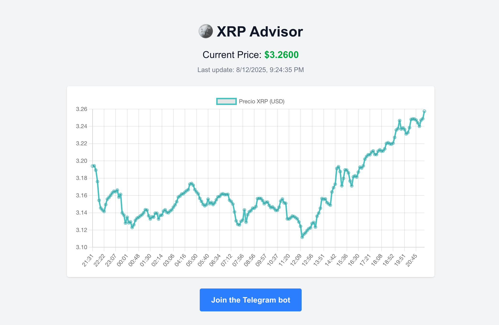

Microproject #1 — XRP Advisor (Technical Analysis)
Post info
- Category: Microprojects / Engineering
- Summary: Design and technical decisions of a bot that posts XRP price every 30 minutes.
- Date: August 12, 2025
- Hashtags: #nodejs | #telegram | #ci | #architecture | #microprojects
Introduction and Motivation
The goal of this microproject was clear and self-imposed: to build something that can be completed in a weekend and that covers a small real-world flow (query a public API, persist state, post a result to a channel). The result is XRP Advisor, a process that every 30 minutes fetches the XRP price in USD, compares it with the last measurement, and sends a message to a private Telegram channel.
Functional and Non-Functional Requirements
- Functional: fetch XRP price, calculate absolute variation, send summary to Telegram.
- Non-functional:
- Minimal fault tolerance (retries on transient failures).
- Lightweight persistence of the last price.
- Configuration via environment variables (secrets in CI).
- Automation: run every 30 minutes without dedicated server (GitHub Actions cron).
Design and Architectural Decisions
For a project of this scope, I made decisions oriented to simplicity and maintainability:
- Periodic process: use of a scheduled runner (GitHub Actions) to avoid maintaining 24/7 infrastructure.
- Persistence: initially a JSON file in the workspace. This is enough for testing but has limitations on ephemeral runners. Alternatives are explained below (lightweight database, remote storage).
- Robustness: exponential retries on API calls, response validation, and atomic file writing.
- Observability: meaningful logs and failure notifications to the Telegram channel itself (or to an alerts channel).
- Security: use managed secrets (GitHub Secrets / environment variables) and never commit credentials.
Considerations on Persistence
Saving the last price in last_price.json is the simplest way but has limitations:
- On ephemeral runners (GitHub Actions), the workspace doesn’t persist between executions — to keep the file you would need to commit/push it or use an artifact.
- If the service scales (multiple instances), the local file can’t serve as a single source of truth.
Recommended alternatives (in ascending complexity):
- Use a small remote store: Redis (e.g., Upstash) or a table in Firebase / Supabase.
- Use a blob storage (S3/GCS) and write the JSON there.
- If sticking to GitHub Actions, use a step that commits the file to the repo (requires careful use of
GITHUB_TOKEN).
Example: GitHub Actions Workflow (cron every 30 min)
This workflow runs the script every 30 minutes. Make sure to add SECRETS (TELEGRAM_TOKEN and CHAT_ID) in GitHub.
name: Send XRP update
on:
schedule:
- cron: '*/30 * * * *' # every 30 minutes
workflow_dispatch: {}
jobs:
send-update:
runs-on: ubuntu-latest
steps:
- uses: actions/checkout@v4
- uses: actions/setup-node@v3
with:
node-version: '18'
- run: npm ci
- run: node send_update.js
env:
TELEGRAM_TOKEN: ${{ secrets.TELEGRAM_TOKEN }}
CHAT_ID: ${{ secrets.CHAT_ID }}
# GITHUB_TOKEN: ${{ secrets.GITHUB_TOKEN }}Future Improvements and Roadmap
- Remote persistence (Upstash/Supabase) to avoid problems with ephemeral runners.
- Price history and small metrics (e.g., 24h max/min) on a minimal public endpoint or dashboard.
- Bot options: allow ad-hoc requests ("/price") or threshold subscriptions.
- Simple dashboard (React/Vercel) showing latest readings and errors.
Conclusion
XRP Advisor started as a weekend exercise but with careful technical decisions: basic fault tolerance, atomic writes, and an architecture that allows evolution. To move from microproject to production service, persistence, observability, and deployment permissions would need improvement; however, for the original purpose (quick practice, learning, and delivery) the solution is adequate and easily extensible. Hope you like it!
Useful Links:
- Project website: xrp-advisor.vercel.app
- Telegram bot @xrp_advisor_bot